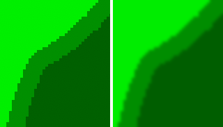
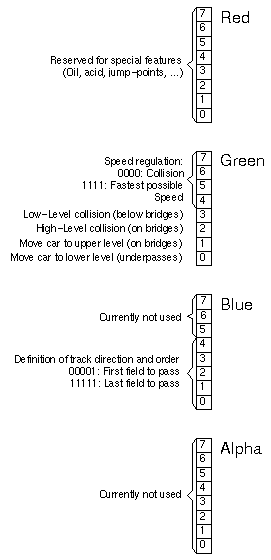

5
|
Designer Manual for - «Trophy» |


The function map is needed for several reasons:
- Defining the maximum speed on the different areas
- Defining the direction and order of the track
- Defining the position of bridges and tunnels
- Defining collision areas
To store all this information in one image, Trophy uses bitwise information of the colors. Therefore it is very important, that you use exact colors for all following operations. Do not use any blending or smooth effects. If you make selections to fill them, make sure that you sharpen the selections before (Select -> Sharpen). All contours in the function map should look like shown at the left in the figure below and not like shown at the right.
|  |
|
Fig. 3: Function maps should look like the left image (sharp) and not like the right (smooth). |
Each pixel in a function map needs four bytes (24bit) of memory: Three Bytes for the Red, Green and Blue information and one Byte for the Alpha channel (which is currently not used by function maps). You don't need to know how exactly the encoding works as this manual gives you all the details of how to create maps step by step. But for completeness, here's the key for the Bits:
|  |
|
Fig. 4: Color Bits encoded. |
So if the color of an area in the function map is #00f101 (what means Red: 00h = 0d = 00000000b, Green: f1h = 241d = 11110001b, Blue: 01h = 1d = 00000001b) the speed on this field is not limited, a car which enters the area moves to the lower level and the area is on the first field of the track.
Don't give up if you don't understand all this - it's just additional information and not needed to create cool tracks for Trophy.